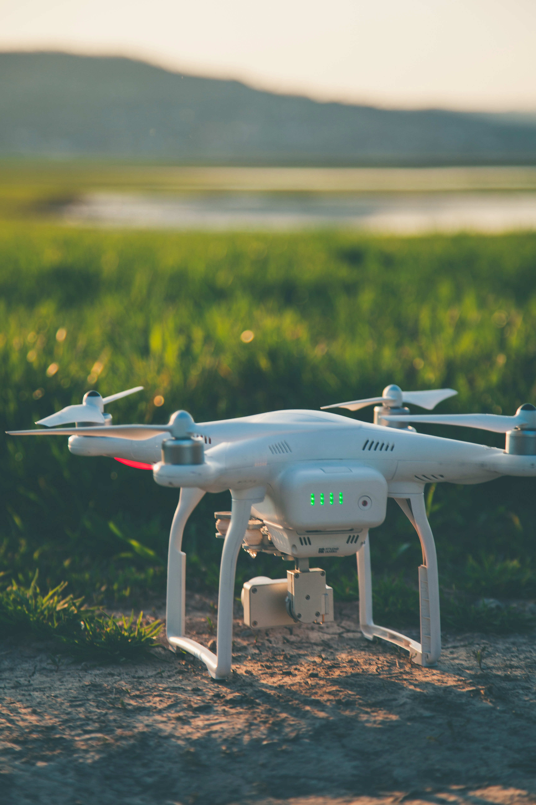

¿Para qué sirven los drones?
Uso
Los drones tienen un gran potencial en áreas muy diversas, ya que puede desplazarse rápidamente sobre un terreno irregular o accidentado y superar cualquier tipo de obstáculo ofreciendo imágenes o capturando otro tipo de datos a vista de pájaro, gracias a los dispositivos que puede transportar (cámaras, sensores…) sin riesgos para las personas..

Partes de un dron